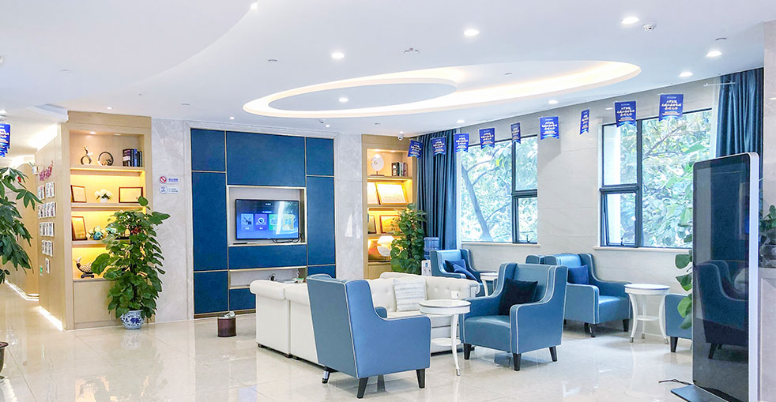

獲得關於毛髮修復手術、恢復、效果等所有問題的答案
了解我們毛髮修復過程的關鍵細節
取決於移植的毛囊單位數量
大多數患者可以迅速恢復辦公室工作
新頭髮開始可見生長
實現完整的毛髮修復
我們的先進技術確保高成功率
移植的頭髮終生存在
查看我們患者取得的驚人變身效果


與滿意患者一起捕捉的珍貴時刻

成功手術後與我們醫療團隊合影

與我們醫師一起慶祝出色效果

另一位滿意患者分享他們的喜悅

出院前與我們專科醫師合影

術後與陳醫師合影的快樂患者

興奮的患者展示他們的新造型

患者對他們的變身感到高興

患者以驚人效果重新出發
來自世界各地滿意患者的聲音
"在做植髮前我超級緊張，但看完這裡的植髮注意事項後完全放心了！植髮恢復期比我預期短很多，三天就能上班了！"
"植髮前我對恢復期和可能副作用有很多疑問，在Google上搜尋了很多相關問題。這個FAQ頁面解答了我所有疑慮！術後護理指南非常詳細準確，讓我很安心地完成手術。"
"最擔心植髮後遺症會不會很嚴重，結果這個FAQ解釋得非常清楚！實際術後只有輕微腫脹，完全沒有想像中的那麼可怕！"
"在Bing搜尋了超多關於植髮恢復期的問題，這個FAQ比我看到的任何其他資料都詳細！尤其是術後護理的指導，非常實用！"
"關於毛囊存活率和費用的疑問都在這裡找到答案了！FAQ的內容非常專業全面，讓我對整個植髮流程有了清楚的了解！"
"植髮前看了好多遍這個FAQ！從FUE和FUT的區別到植髮恢復期每個階段會發生什麼事，都寫得很詳細。術後效果果然和說的一樣！"
看看您的變身將在哪裡發生

舒適術後空間

溫暖歡迎入口

最先進的設施

在高級休息室放鬆

無菌先進設備

私密專業空間
點擊複製聯絡方式
15810155700
+86 13730143529
hairtransplant@qq.com